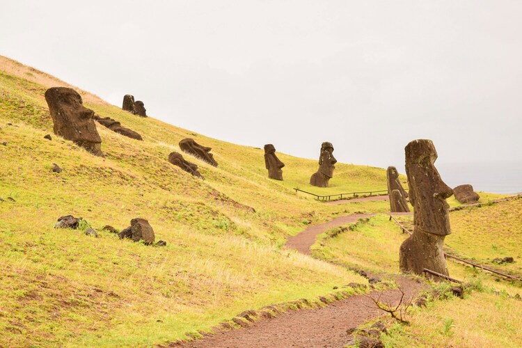
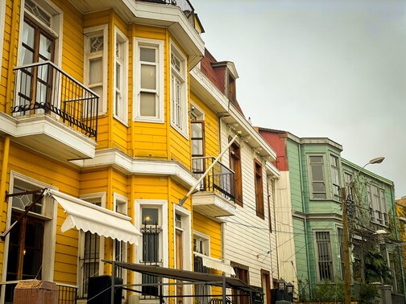

Chili
Immergez-vous dans la diversité époustouflante du Chili, un pays où les contrastes naturels vous éblouiront à chaque tournant. Des sommets enneigés des Andes aux déserts arides d'Atacama, en passant par les fjords spectaculaires de la Patagonie et les plages paradisiaques de l'île de Pâques, le Chili offre une infinité de merveilles naturelles à explorer.
Que vous soyez un passionné de plein air à la recherche d'aventures, un amateur de vins désireux d'explorer les vignobles réputés du pays, ou un voyageur en quête de cultures fascinantes, le Chili a quelque chose à offrir à chacun. Préparez-vous à être émerveillé par la diversité des paysages, à déguster des mets délicieux et à être accueilli par la chaleur et l'hospitalité de ses habitants.
Notre guide complet vous aidera à planifier votre voyage au Chili en vous fournissant des informations essentielles sur les sites à visiter, les activités incontournables, les conseils de voyage, les formalités administratives et bien plus encore. Laissez-vous séduire par la magie du Chili et partez à la découverte de ce pays extraordinaire.
 Carte d'identité
Carte d'identité
 Lieux à voir
Lieux à voir
 Itinéraire type
Itinéraire type
 Administratif
Administratif
10 CONSEILS POUR VOYAGER AU CHILI

- Planifiez soigneusement vos déplacements car le Chili s'étend sur près de 4 300 km de long !
- Assurez-vous d'avoir un budget voyage adéquat, les prix peuvent être comparables à ceux que vous trouveriez en Europe.
- Imprégnez-vous pleinement de la beauté naturelle et des paysages uniques que le Chili a à offrir.
- Choisissez vos destinations avec soin en tenant compte de la durée de votre séjour.
- Évitez de passer trop de temps dans les grandes villes, à l'exception de Valparaiso.
- Prévoyez une marge de manœuvre suffisante dans le Sud du pays en raison de la météo changeante.
- Si vous utilisez une carte SIM locale et prévoyez de séjourner plus d’un mois, pensez à enregistrer votre téléphone auprès de l'opérateur.
- Familiarisez-vous avec les bases de l'espagnol.
- Profitez des interactions avec les Chiliens, souvent très accueillants, même s'ils peuvent être plus réservés que leurs voisins argentins.
- Dégustez les célèbres vins chiliens, qui ont acquis une réputation mondiale méritée.
Carte d'identité
L'île de Paques
L'Île de Pâques, connue sous le nom de "Rapa Nui" en langue autochtone, est une île située dans l'océan Pacifique Sud-Est, à environ 3 700 kilomètres à l'ouest des côtes du Chili.
L’île de Pâques est célèbre pour ses statues monumentales en pierre, appelées “moaïs”, qui ont été sculptées par les anciens habitants de l’île entre les IXe et XVIIe siècles. Ces statues, qui représentent des ancêtres divinisés, sont disersés à travers l’île et constituent une ccaractéristique emblématique de sa culture.
Contexte politique
Durant les années 50-70, le Chili connaît une politique démocratique. Il adopte de nombreux réformes dans les domaines de l'éducation, la santé ainsi que la nationalisation des industries clés sont adoptées.
11 septembre1973, le général Augusto Pinochet effectue un coup d'État militaire soutenu par les États-Unis qui craignent un second Cuba. Cette dictature est marquée par la répression politique et les violations des droits de l'homme. Le néolibéralisme économique se développe également influencé par les Chicago boys ce qui conduira à la croissance économique du pays mais agrandira la fracture sociale.
17 ans plus tard, la dictature prend fin et la transition démocratique commence. Les gouvernements successifs travaillent à rétablir les institutions démocratiques, à poursuivre les responsables des violations des droits de l'homme et à réformer l'économie pour atténuer les inégalités.
Cependant, en octobre 2019, le Chili est secoué par des manifestations massives déclenchées par une augmentation du prix du ticket de métro à Santiago mais qui se transforment rapidement en un mouvement plus large contre les inégalités socio-économiques et les institutions héritées de la dictature.
Lieux à visiter
Île de Pâques
L’île de Pâques est un petit bout de territoire chilien situé au beau milieu de l’océan Pacifique, à 3 700 km de la côte sud-américaine. Elle est encore aujourd’hui entourée d’une multitude de légendes et de mystères.
Le parc national Torres del Paine
Situé en Patagonie, ce territoire a de quoi émerveiller tous les amoureux des treks. Excellent condensé des paysages que vous pouvez trouver dans cette région, Torres del Paine reste un des points phares et incontournables d’un voyage au Chili.

San Pedro de Atacama
San Pedro de Atacama se situe dans l’Altiplano, près de la frontière bolivienne. L’Altiplano correspond à un plateau aride d’altitude (en moyenne 3 300 m) qui définit toute une partie des Andes. Les panoramas y sont lunaires et désertiques.
Valparaiso
Valparaiso signifie littéralement “vallée du paradis” et beaucoup la surnomment “Valpo”. La capitale culturelle du Chili, classée au patrimoine mondial de l’UNESCO, a inspiré bon nombre d’artistes, notamment Pablo Neruda.
Putre / Parc national Lauca
Tout au Nord du Chili, dans le parc national Lauca, venez à la rencontre d’une faune unique, variée et souvent peu farouche. Vigognes, alpagas, lamas, viscaches (espèce de gros chinchilla) ne font que magnifier les panoramas déjà exceptionnels de l’endroit.

Votre itinéraire parfait !
Une fois arrivés à Santiago, vous pouvez y passer deux jours afin de vous remettre du voyage. Visitez succinctement la ville et profitez surtout de son confort.
Ensuite, direction Valparaiso. Déambulez dans les rues, empruntez un vieux funiculaire pour atteindre un des points de vue sur la ville depuis le haut d’une colline. Le Cerro Artilleria surplombe le port, le Cerro Carcel offre une vue imprenable sur la baie et le Cerro Baron domine les maisons colorées du centre. Pour en savoir plus sur le street art qui fait la popularité de la ville, joignez-vous à un Free Walking Tour. Le soir, appréciez l’ambiance festive qui règne dans la « vallée du paradis ».
En route vers le sud. Direction Pucon, dans la région des lacs. Effectuez une des belles marches du parc national Huerquehue ou l’ascension du volcan Villarica. Vous pouvez aussi choisir parmi les nombreuses activités proposées depuis la ville (escalade, rafting, kayak, équitation, vélo).
Vous prendrez ensuite la direction de l’île de Chiloe. Depuis Castro, vous pouvez rayonner sur toute l’île. Prenez le temps de vous imprégner de sa culture particulière, d’apprécier son architecture et de goûter le plat traditionnel : le Curanto. Depuis Ancud, partez pour une excursion vers Punihuil et faites la rencontre des manchots.
Poursuivez encore plus loin vers le sud pour rejoindre le parc national Torres del Paine, véritable condensé des paysages que la Patagonie peut offrir. Ne ratez pas les points incontournables : les tours de granit, la vallée Frances et le glacier Grey. Vous pouvez organiser la visite depuis Puerto Natales.
Retournez à Santiago pour votre vol de retour. Profitez de votre dernier jour dans la capitale chilienne pour faire des achats de souvenirs, déguster des plats traditionnels dans un restaurant local ou simplement vous promener dans la ville.
La partie administrative
Types de visas
| Type de visa/autorisation | Durée maximum d’un séjour | Durée de validité | Prix | Prolongation possible |
|---|---|---|---|---|
| Exemption de visa | 90 jours | - | Gratuit | Oui |
| Visa Vacances-Travail | 1 an | 90 jours | 135 $ US | Non |
Exemption de visa
Les ressortissants français bénéficient d'une exemption de visa de 90 jours au Chili à partir de leur date d'entrée dans le pays. Toutefois, les autorités se réservent le droit de réduire cette période dans des circonstances exceptionnelles. Il est à noter qu'un séjour sur l'île de Pâques ne peut pas dépasser 30 jours.
Pour entrer au Chili, un passeport français valide pour toute la durée du séjour est requis. À la frontière, il peut être nécessaire de fournir des informations sur les raisons et la durée de votre visite, ainsi que l'adresse de votre hébergement.
À votre arrivée au Chili, vous devez remplir une carte de tourisme (Tarjeta de Turismo) fournie par la Police chilienne à la frontière (Policia De Investigaciones). Une fois votre entrée dans le pays validée au guichet, un agent de police glissera une carte d'immigration dans votre passeport. Cette carte est personnelle et non transférable. Vous devez la conserver précieusement et la présenter lors de votre départ du pays.
Prolongation d'exemption
La méthode la plus simple pour prolonger votre exemption de visa consiste à franchir une frontière. Il vous suffit de faire un aller-retour en Argentine et vous bénéficierez d'une nouvelle autorisation de séjour de 90 jours au Chili.
Il existe deux situations possibles :
- Si, à votre arrivée, l'agent frontalier vous a accordé moins de 90 jours (ce qui est très rare), vous pouvez demander une extension de la durée de votre autorisation pour obtenir les 90 jours complets. Cette procédure, appelée "ampliacion de turismo", est gratuite.
- Si, à votre arrivée, l'agent frontalier vous a accordé une autorisation de 90 jours, vous pouvez demander une prolongation de cette autorisation. Cette procédure, appelée "proroga de turismo", vous permet de rester sur le territoire pendant 90 jours supplémentaires. Vous devrez régler des frais équivalant à 100 $US en pesos chiliens.
Dans les deux cas, vous devez effectuer la démarche dans les 30 derniers jours de votre exemption de visa.
Frais bancaires
Où retirer ?
| Banque | Frais en pesos chiliens | Frais en euros | Retrait max en pesos chiliens | Retrait max en euros |
|---|---|---|---|---|
| ScotiaBank | Pas de frais | Pas de frais | 200 000 Pesos | 220 € |
| Banco Internacional | Pas de frais | Pas de frais | ||
| BCI | 4 738 Pesos | 5,10 € | ||
| Redbank | 4 900 Pesos | 5,30 € | ||
| Banco Security | 5 000 Pesos | 5,45 € | 200 000 Pesos | 220 € |
| CorpBanca / Itaú | 5 000 Pesos | 5,45 € | ||
| Banco Condell | 5 000 Pesos | 5,45 € | 200 000 Pesos | 220 € |
| Corpobanca | 5 000 Pesos | 5,45 € | ||
| BBVA | 5 000 Pesos | 5,45 € | 200 000 Pesos | 220 € |
| Banco Estado | 5 500 Pesos | 6,00 € | 400 000 Pesos | 440 € |
| BICE | 5 500 Pesos | 6,00 € | ||
| Banco de Chile | 6 000 Pesos | 6,50 € | 200 000 Pesos | 220 € |
| Santander | 8 500 Pesos | 8,25 € | 200 000 Pesos | 220 € |
| Banco Consorcio | 6 000 Pesos | 6,50 € | ||
| Banco Edwards/Citi | 6 000 Pesos | 6,50 € |
Les vaccins
Avant de vous faire vacciner, assurez-vous dans votre carnet de santé que vous n’avez pas déjà reçu des injections pour des voyages antérieurs. Vérifiez également que vous êtes à jour de vos vaccins classiques : Diphtérie, Tétanos, Poliomyélite, Coqueluche, Hépatite B, Méningite, Rougeole, Oreillons, Rubéole et Covid.
Je vous conseille fortement d'aller visiter le site de l'Institut Paster qui donne les informationsà ce sujet en temps réel par pays ce qui est exactement votre besoin.
| Maladie | Mode de transmission | Recommandations de l’Institut Pasteur pour le Chili | Schéma vaccinal adultes | Enfants |
|---|---|---|---|---|
| Hépatite A | Eau et nourriture | Vaccin recommandé à tous les voyageurs | 1 injection au moins 15 jours avant le départ Rappel recommandé 6 à 12 mois après la première injection (en cas d’oubli, il peut être administré jusqu’à 3 à 5 ans après la première injection) Durée de protection : au moins 10 ans |
À partir de 1 an |
| Rage | Animaux infectés (chiens, chauve-souris…) | Vaccin non recommandé | 3 injections : la deuxième 7 jours après la première, la troisième 28 jours après la première | Dès qu’ils marchent |
| Tuberculose | Voie aérienne | Vaccin BCG recommandé aux enfants en cas de séjours répétés ou supérieurs à un mois. Il peut être fait jusqu’à 15 ans. | 1 injection | Dès la naissance |
| Typhoïde | Eau et nourriture | Vaccin recommandé aux voyageurs en cas de séjour long ou dans de mauvaises conditions | 1 injection 15 jours avant le départ Durée de protection : 3 ans |
À partir de 2 ans |
| Encéphalite japonaise | Moustiques | Vaccin non recommandé | 2 injections à 28 jours d’intervalle Rappel 12 à 24 mois après la première injection |
À partir de 2 mois |
| Encéphalite à tique | Tiques | Vaccin non recommandé | 3 injections : le deuxième 1 à 3 mois après la première, la deuxième 9 à 12 mois après la première | À partir de 1 an |
| Fièvre jaune | Moustiques | Vaccin non recommandé | 1 injection 10 jours avant le départ Durée de protection : à vie (sauf certains cas particuliers) |
À partir de 9 mois (entre 6 et 9 mois dans certains cas particuliers) |
Sources : Institut Pasteur, France Diplomatie, Hôpital Bichat, Vidal, MesVaccins.net, Center for Disease Control and Prevention et Fit for Travel
Contacts utiles
Ambassade du Chili à Paris
Site Web : Site Web de l'Ambassade du Chili à Paris
Adresse : 2, avenue de La Motte-Picquet – 75007 Paris
Tél. : 01 44 18 59 60
Mail : efrancia@minrel.gob.cl
Heures d’ouverture : du lundi au vendredi de 9h à 13h et de 15h à 16h
Ambassade de France à Santiago
Site Web : Site Web de l'Ambassade de France à Santiago
Adresse : Condell 65 – Providencia – Santiago
Tél. : +56 224 70 80 00
Mail : consulat.santiago@gmail.com
Heures d’ouvertures : du lundi au vendredi (sauf le mercredi) de 9h à 12h seulement sur RDV
Consulat du Chili à Paris
Site Web : Site Web du Consulat du Chili à Paris
Adresse : 64, boulevard de La Tour-Maubourg – 75007 Paris
Tél. Infos générales : 01.44.18.59.96 / 01.44.18.59.90
Tél. Visas : 01 44 18 59 95
Mail Infos générales : paris@consulado.gob.cl
Mail Visas : visasparis@minrel.gob.cl
Heures d’ouverture : du lundi au vendredi de 8h30 à 12h30 et de 14h à 14h30 seulement sur RDV
Ministère de l’Intérieur au Chili
Site Web : Site Web du Ministère de l’Intérieur au Chili
Adresse : Matucana 1223 – Santiago
Tél. : +56 600 486 3000 (du lundi au samedi de 8H30 à 17H00)
Heures d’ouverture : du lundi au vendredi de 08H30 à 14H00 seulement sur RDV
Police d’investigations – PDI
Site Web : Site Web de la Police d’investigations – PDI
Adresse : San Francisco 253 – Santiago Centro
Tél. : +56 227 081 043 / +56 227 081 044
Préfecture de Police Internationale
Adresse : Aéroport de Santiago Arturo Benítez (siège national des étrangers et de la police internationale)
Tél. : +56 227 082 659 (renseignements 24/7)